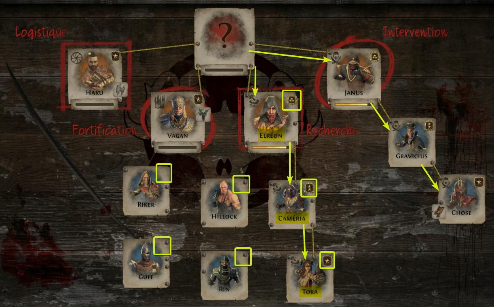

Path of Exile - Betrayal vous plonge au coeur du Syndicat Immortel.
Alors que vous parcourez Wraelcast, vous aurez l'occasion de rencontrer Jun, une Maître-Cryptologue.
Cette dernière vous assistera dans le démantelèment du syndicat, afin d'affronter son cerveau et triompher de ses trésors.
Le Syndicat Immortel est composé de 4 factions, la Logistique, la Fortification,
la Recherche et l'Intervention.
Ces quatres factions représentent chacune un évenèment différent
lors d'une rencontre avec le Syndicat.
- Logistique
Vous reconnaîtrez la faction de la Logistique pour sa spécialisation dans le transport.
Lors d'une confrontation avec cette faction, ses membres tenteront de mener un convoi à un portail afin d'en dérober le contenu.
Vous pourrez les arrêter ou les ralentir en attaquant les membres qui la compose.
Si vous les capturer (en les tuant) avant qu'il ne mène le convoi à destination, alors vous serez maître de leurs sort.
- Fortification
La faction de la Fortification établi un fort sur le terrain et le défendent à l'aide de tourelles.
Afin de faciliter le combat contre le fort, il est recommandé de détruire ses portes pour neutraliser les totems soigneur à l'intérieur
Le combat n'est pas restreint par le temps et lorsque vous aurez vaincu les défendants vous pourrez alors choisir leur destin.
- Recherche
La faction de la Recherche pille des laboratoires souterrain pour détruire des preuves.
Vous devez vaincre les monstres avant que ces derniers ne les détruisent.
A défaut, les bandits fuiront et abandonneront le laboratoire derrière eux.
Afin de ralentir la destruction des preuves, il est recommandé de tuer les monstres rares humanoïdes.
Une fois les membres de la Recherche battu et capturé, les monstres du laboratoire disparaîtront et les preuves seront hors de danger.
Vous pourrez alors décider de la sentence appropriée pour les bandits.
- Intervention
Enfin, la faction de l'Intervention est la plus furtive de toute, ses membres apparaîtront aléatoirement derrière
vous depuis un portail afin de tenter de vous tuer.
Ces derniers doivent être neutralisé avant qu'ils ne vous tuent, sinon quoi, ils partiront.
Une fois vaincu, vous serez invité à prendre une décision les concernant.
Les relations au sein du Syndicat influent sur les actions des membres entre eux lors de votre prise de choix suite à une victoire.
Les rangs amélioreront la qualité et la quantité du butin mais également la puissance d'un membre.
La loyauté est representée par un cordon vert reliant deux cartes de membre.
La rivalité est representé par un cordon rouge et les cordons jaunes représentent l'appartenance à une même faction.
Dans l'exemple à droite, Elréon (☆☆☆) de la faction Recherche est rival avec Hillock (sans faction).
Il est donc probable qu'Hillock vienne vous aider lorsque vous attaquerez la faction Recherche. Facilitant le combat, mais réduisant le butin.
En revanche, des alliés s'entraideront, rendant le combat plus compliqué mais vous offrant plus de butin.
Notez que les relations influent également sur les choix proposés par les membres vaincus après une rencontre sur le terrain.

Vous pouvez montrer ou cacher les relations des membres dans l'outil d'aide de votre panneau du Syndicat.

Les rangs (representés par les étoiles sur les cartes de membre) quantifient la puissance mais aussi la qualité des butins d'un membre.
Les rangs peuvent être obtenu (ou perdu) aux travers des interactions avec un membre capturé lors d'une rencontre.
La position des cartes des membres au sein d'une faction dépend de la hiérachie interne à la faction (représentée par les rangs).
Un membre sans rang n'appartient à aucune faction et ce jusqu'à qu'il soit promu.
Prenons la faction de la Recherche dans l'exemple ci-dessus.
Elréon (☆☆☆) est à la tête de la faction et Caméria (☆☆), est sa subordonné.
Tora, elle, n'est que de rang (☆) et est la subordonnée de Caméria. Tout trois seront donc présent lorsque vous attaquerez leurs abris.
Hillock, Rin, Guff et Riker ne sont dans aucune faction et n'interviendront donc pas lors de l'attaque d'un abri, sauf s'ils sont promus d'ici là. Il se peut (dépendant des relations au sein du Syndicat)
que ceux-ci interviennent sur le terrain, lors d'une attaque de faction.
Ce cas de figure peut se présenter si Riker, par exemple, est allié avec Tora et que vous croisez Tora dans un laboratoire souterrain (point d'attaque de la Recherche).
Si vous battez Tora et Riker, vous aurez peut-être l'opportunité de grader Riker au sein du Syndicat.
La prison, représentée par le cadre au bas de votre tableau du Syndicat, est l'endroit où se trouveront les membres pour lesquel vous choisirez l'interrogation après un combat victorieux.
Les prisonnier ne peuvent pas intervenir lors d'une attaque de la faction dont ils sont membres.
Tandis qu'ils sont retenus, ceux-ci vous offriront de l'intelligence (de la recherche) sur l'une des factions, faisant ainsi
progresser la découverte de l'abri de cette dernière.
Notez que lorsque vous envoyez un membre du Syndicat en prison, celui-ci perd un rang.
Si le membre n'est que Sergent (☆), alors il quittera sa faction à sa sortie de prison et se retrouvera sans faction.
Un membre envoyé en prison perd ses équipements ainsi un ennemi trop puissant peut être incarceré pour l'affaiblir à sa sortie.
Tandis que les rangs améliorent le butin cedé par les membres,
leurs équipements ne vous octroie pas de bonus, ils ne font qu'avantager votre ennemis en lui conférant des bonus.
Un membre va en prison pour trois tours. Un tour est représenté par une interaction avec une rencontre avec le Syndicat (après les avoir vaincu).
La recherche représente votre progression dans la découverte de l'abri de l'un des cinq abris du Syndicat.
L'avancement est traduit par une barre jaune se trouvant dans le cadre du chef de l'un des cinq abris.
Vous pouvez gagner de l'intelligence après une victoire contre l'une des factions.
Un membre capturé vous suggèrera deux possibilitées,
celle de droite sera systématiquement de l'incarcération tandis que l'option de gauche vous proposera des objets, de l'intelligence, des promotions,
de l'interaction sur les relations des membres et d'autres possibilitées à découvrir.
Lorsqu'il vous sera proposé de l'intelligence (nommée Renseignement en jeu), sous forme d'un bonus tel que :
+X Renseignement(s) sur la section de Logistique
Alors vous ferez progresser la recherche de l'abri de la Logistique de X%.
Une fois les 100% atteint, un bouton [Abri] remplacera la barre de progression de recherche et lorsque vous parlerez à Jun, cliquer sur [Abri] vous ouvrira un portail vers celui de la faction concernée.
Les abris des factions sont des zones dont Jun vous débloque l'accès 5 fois.
Pour débloquer l'accès à un abri, il vous faudra complèter la recherche de celui-ci en collectant de l'intelligence, à hauteur de 100% par abri, par faction.
Si vous mourrez dans un abri, alors vous reviendrez à l'entrée et consommerez l'une de vos chance.
A l'intérieur d'un abri, la carte vous est révelée et vous devez la traverser afin de vous rendre dans une arène vous mettant
face au chef de la faction attaquée ainsi que les différents membre qui la compose.
Si vous sortez victorieux, alors Jun vous laissera décider du sort du chef de faction et vous ouvrira l'accès à la salle des trésors.
La qualité et la quantité du butin dépenderont du nombre de membre dans la faction attaquée ainsi que leurs rangs.
L'assaut de l'abri du Cerveau fonctionne de manière similaire.
Il existe deux source de butin venant du Syndicat : lorsque vous décider de la sentence d'un membre après l'avoir vaincu et lorsque vous vous rendez dans la salle des trésors d'un abri.
Notez que les récompenses de la salle des trésors dépendent de deux facteurs : le nombre de membres dans la faction attaquées et les membres qui la compose.
Si la faction que vous défiez est composées de trois membre, la salle des trésors sera composées de trois salles, et ainsi de suite.
De plus, la nature des récompenses dans chacune des salles dépendera des membres qui composent la faction ainsi que leurs rang.
Leurs rang améliorera la qualitée générale du butin tandis que chaque membre influencera une salle en particulier.
Si la carte d'un membre de la faction à pour texte "Fait de la contrebande d'essence" par exemple,
alors il est propable que l'une des salles des trésors contiennent un butin en rapport avec les essences.
La mise à jour Path of Exile : Betrayal ajoute une nouvelle propriété d'équipement : crypté. Cette propriété
peut être trouvée sur les objets que le Syndicat cède.
Un équipement crypté peut être décrypté par Jun, lorsque vous lui parler et choissisez l'option "Décrypter un objet".
Vous pourrez alors déposer un objet dans la case de décryptage et choisir l'une des trois propriétées proposées et celle-ci sera appliquée sur l'objet.
Les propriétées offertes par le décryptage peuvent être propre à ce procedé, il est donc possible de fabriquer des objets plus puissant qu'auparavant.
Enfin, la propriété cryptée sera sauvegardé dans l'établi d'artisan de votre repaire et vous pourrez la ré-appliquer sur d'autres objets à votre guise.
Votre but au sein du Syndicat sera d'accumuler de l'intelligence sur le Cerveau afin de le combattre et triompher du Syndicat.
Lors de votre parcours, vous serez à mener à attaquer divers abris et accumuler du butin, en manipulant le Syndicat et en profitant des conflits internes pour influer sur votre progression.
Afin de progresser plus rapidement dans votre Syndicat, il est important de créer des relations au sein de celui-ci afin de pimenter vos combats et jouir de plus de contrôle sur le Syndicat.
En effet, après une rencontre, un membre vaincu = une décision sur le Syndicat. Jusque trois membres peuvent vous attaquer à la fois,
mais notez que lorsque vous achever l'un des membres du combat, alors les autres fuiront
si vous tardez à les battres.
Notez également que la décision prise sur l'un de membres influe les décisions proposées par les autres membres lors d'une rencontre,
puisque chaque décision inévitablement de toute façon toutes les rencontres à venir.
De ce fait, il vaut mieux inspecter les trois détenus et prendre compte que les décisions changeront à chaque tour (un tour représente une interaction avec le Syndicat).
Des membres loyaux proposeront plus souvent de trahir leurs partenaire, vous permettant ainsi de déplacer les membres au sein du Syndicat,
voir même les en expédier, si ceci vous bénéficie dans votre stratégie.
Des relations hostile vous donnera plus d'opportunité
d'executer les détenus, vous permettant de leurs faire monter en rang (eh oui, c'est le Syndicat Immortel).
L'interaction entre les relations est importante dans l'influence des choix qui vous seront proposés contre un membre vaincu, je n'ai pas pour
vocation de vous donner une stratégie à suivre, mais plutôt d'en comprendre la surface.
Je vous invite à construire votre propre stratégie et observer comment les paramètres de votre Syndicat changeront les
décisions que vous pourrez prendre à l'égar de celui-ci.
Vous trouverez plus de détails sur le Syndicat, ses récompenses et son
fonctionnement dans la section ci-dessous, mais celle-ci révèle une grande partie du contenu de la mise à jour, aventurez vous-y en connaissance de cause.
Aussi, bonne chance pour le Cerveau. Vraiment.